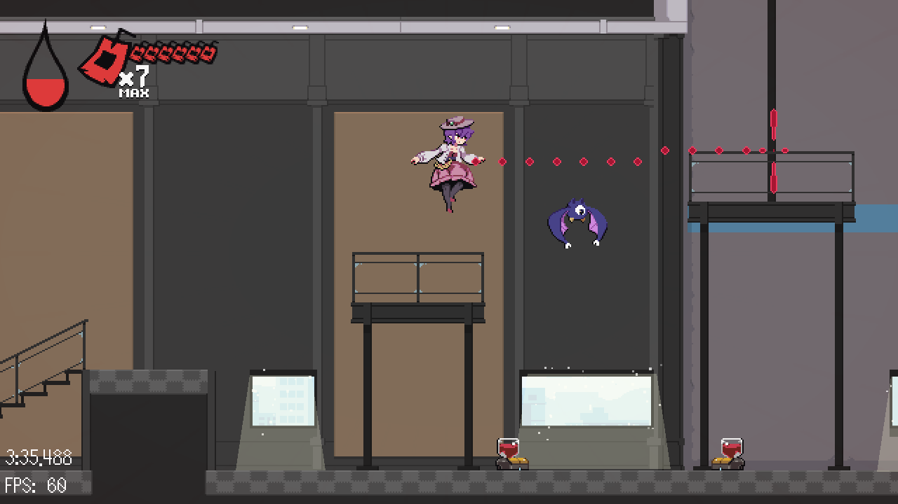
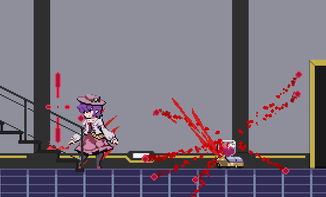
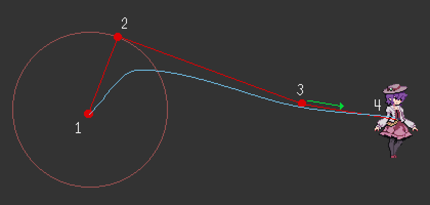
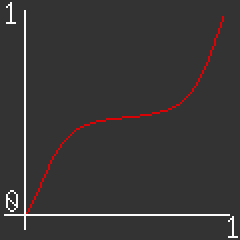
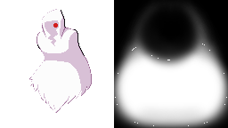

Overview
A fast-paced roguelite platformer starring a vampire trying to steal a cure to sunlight!
The goal for this project was to make the development as time efficient as possible. After the initial 4 month development, I updated the game for release on Steam. This update was meant to learn how to integrate the Steam API and launch on Steam. I also took the opportunity to learn how to localize a game.
Steam API
I implemented the Steam API using a Godot plugin which provided the interface. We used the API mainly for achievements, with a wrapper implemented in a singleton so that it is available across the game easily.
func steamGetAchievement(name:String):
print("Get Achievement call: %s"%[name])
if not Steam.is_init():
print("Steam not initialized.")
return
if not steamValid:
return
if steamAchievementExists(name):
Steam.set_achievement(name)
else:
print("Name didn't correspond with any achievement: ",name)
Localization
Since we ended up translating the game after the initial release, a lot of the game was not built to
accommodate it. However luckily Godot provides convenient features for localization. All of the text
is loaded from a csv file, then you simply call tr(text) to get the text from the
string table in
the current locale. Some graphics also needed alternate versions where they contained text, and
Godot has the “remaps” feature to swap them in for us.
I selected the language specifically so that I’d have to update our pixel font with a small number of new characters. The font characters are loaded from a spritesheet in a user defined order which doesn’t have to follow ASCII or Unicode ordering. I manually check the font for any kerning overrides, and the font resource is created.
Player State Machine
In order to accommodate complex player movement, I implemented the player character behaviour using a modified state machine that stores active states in a stack. Each state controls the movement and animation logic.
Valerie preparing a dash. This state has unique behaviours.
Each state may have entirely different logic. For example, when preparing a dash Valerie will slowly float down. Then when dashing we want no gravity at all! The drinking state stops all input for a moment. This could easily get unwieldy if many different pieces of the logic are wrapped in a bunch of if statements to determine what we can and can’t do.
Homing Enemy Drops
When you kill an enemy in this game you take their blood to be used as a resource, and to visualize this we have blood particles that spawn from the enemy and move toward Valerie.
Most often I see people approach this via a physics simulation, but there are several reasons why we can do better! The largest issue I intended to solve was the possibility for the object to orbit its target in a gravity based system. There are many games that have this problem, one for example is you can see this in Hollow Knight if you equip the Gathering Swarm charm and move in just the right way.
So maybe you’re wondering how I’m doing it, but to answer that we need to talk about parallel
universes Bezier curves. If you’d like to learn about Bezier curves in general I highly
recommend Freya Holmer’s video on them.
For our purposes we need them to define a curve in 2d space
which we travel along as a value denoted as t goes from 0 to 1 over a duration.
For this purpose we use a cubic Bezier curve, which uses 4 points total including the endpoints. A quadratic curve, using 3 points, has some issues that we can address with the cubic curve. We can number our points 1 through 4, with 1 being the start and 4 being the end of the curve, then 2 and 3 are considered “control points” that shape the curve.
The diagram above shows how we make the arc. Points 1 and 4 are of course the starting position (where the drop spawned) and ending position (the current position of Valerie, which may move). We need to decide values for points 2 and 3 to make the path the most interesting. We can use the 2nd point to create the arc, I selected random polar coordinates (a radius and angle) around the spawn point so that I could control the radius the particles fly out of the enemy. This could be selected in plenty of other ways depending on what kind of look you want. Earlier I mentioned that we needed a 4th point for smoothing, and that is what we use point 3 for. If we used the quadratic curve the arc would move awkwardly when Valerie moves. To solve this we initialize point 3 at Valerie’s position at the initialization time then move the point towards her over time. Moving this at a constant rate is sufficient to make the smoothing. In the end the final arc will look something like the blue curve in the diagram.
To complete the effect we also want to control the rate at which the particle follows the path. Our goal is to have the particles hang for a moment after spawning before moving to Valerie. Earlier I mentioned how the path uses a t value to determine the point along the path: if we control the change in t then we can move along the path at a controlled speed. For this we need an easing function, with the requirement that inputting 0 returns 0 and inputting 1 returns 1, then what happens between can be anything we want. We could select from plenty of functions but a Bezier curve in 1d can also serve this purpose and it’s easy to tweak the exact shape. A curve that is close to {0,1,0,1} is what we want, and the shape of that curve is approximated in the image below. We then use the result of this curve as the t in our main curve. The result is that the particles slow down for a moment before homing in towards Valerie.
To animate this I simply store the main t value which each frame is incremented by delta-time/duration. Duration is how long in seconds the particle should take. It is useful for us to control this duration per particle. When the particle reaches the end of the path at t >= 1 we play a sound indicating collecting it. By staggering the durations of a group of these particles we are guaranteed to play the sounds at a precise rhythm which feels quite satisfying!
Ghost Shader
One of the enemies that shows up in the second area is the ghost. It is impervious to your dash and you simply phase through it. It needed to be somewhat intimidating. Given the timeline, I did not have time to animate a flowing ghost sheet by hand, so I used a shader to create the effect.
The ghost sprite and it's distortion mask.
The core of the effect is two scrolling noise textures are mixed to create the UV displacement, which then is multiplied by a mask that says what parts of the sprite are allowed to be distorted (we don’t want the head to distort). We also have a tilt with an intensity parameter, so that the cloth appears to be trailing behind the ghost. A second copy of noise is used and the results blended to create a wispy border.
Below is the shader code, there are a few places the shader could be improved, eg. some values being parameterized.
shader_type canvas_item;
uniform sampler2D noisetex;
uniform sampler2D noiseMask;
uniform vec2 distortion = vec2(0.5,0.1);
uniform vec2 noiseDir1 = vec2(0.2,0.8);
uniform vec2 noiseDir2 = vec2(-0.2,0.8);
uniform float noiseSpd = 0.1;
uniform float noiseAmount = 0.4;
uniform float tilt: hint_range(-1.0,1.0) = 1.0;
uniform float tiltDist = 2.0;
uniform float glitchDist = 1.0;
uniform float glitchAmount: hint_range(0.0,1.0) = 0.50;
void fragment(){
//Pixelate
vec2 pixelsize = SCREEN_PIXEL_SIZE / vec2(640.0,360.0);
vec2 factor = TEXTURE_PIXEL_SIZE /pixelsize;
vec2 pixUV = round(UV/TEXTURE_PIXEL_SIZE+0.5)*TEXTURE_PIXEL_SIZE;
//Get Noise
vec2 nuv = pixUV+noiseDir1*TIME*noiseSpd;
vec2 n2uv = pixUV+noiseDir2*TIME*0.5*noiseSpd;
vec4 ntx1 = texture(noisetex,nuv) -0.5;
vec4 ntx2 = texture(noisetex,n2uv) -0.5;
vec2 scpxuv = vec2(0.0,pixUV.y);
vec4 gdux = texture(noisetex, scpxuv*8.0 + vec2(0.0, floor(TIME*15.0)*0.1)) -0.5;
//Get Mask
vec4 mask = texture(noiseMask,UV);
//Get Base Tilt
float uvyc = max(0.0,UV.y-0.3);
float dx = uvyc*uvyc;
//Get UV Offsets
vec2 guv = (gdux.xy*glitchDist*glitchAmount); //Glitch
vec2 duv = ntx1.xy*mask.x*0.5*noiseAmount; //Displacement
vec2 d2uv = ntx2.xy*(mask.x*0.5+0.5)*vec2(2.5,1.0)*0.75*noiseAmount;
vec2 tuv = vec2(dx*0.1*tiltDist*-tilt,0.0); //Tilt
//Clamp Noise to Final UVs
float frames = 4.0;
float minuv = floor(UV.x*frames)/frames;
float maxuv = ceil(UV.x*frames)/frames;
vec2 fuv = UV +guv +duv +tuv;
fuv.x = clamp(fuv.x,minuv,maxuv);
vec2 f2uv = UV +guv +d2uv +tuv;
f2uv.x = clamp(f2uv.x, minuv, maxuv);
//Get Texture Colors
vec4 bcol = texture(TEXTURE,f2uv);
vec4 dcol = texture(TEXTURE,fuv);
//Blend Colors
vec4 ocol = mix(bcol*0.25+dcol*0.75, dcol, dcol.a*0.8);
//Output
COLOR = ocol;
}